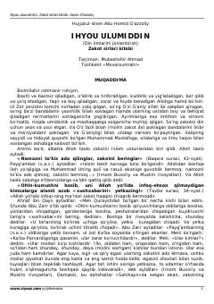

IUZakot ibodati, uning turlari va shartlari haqida ilmiy-diniy risola.
Mazkur kitob islom dini asoslaridan biri bo'lgan zakot ibodatining sirlari, shartlari, turlari va uni ado etish tartiblarini batafsil bayon qiladi. Imom G'azzoliyning mashhur "Ihyou ulumid-din" asarining zakotga bag'ishlangan qismi bo'lib, mol-mulkni poklash va ijtimoiy adolat masalalarini yoritadi.